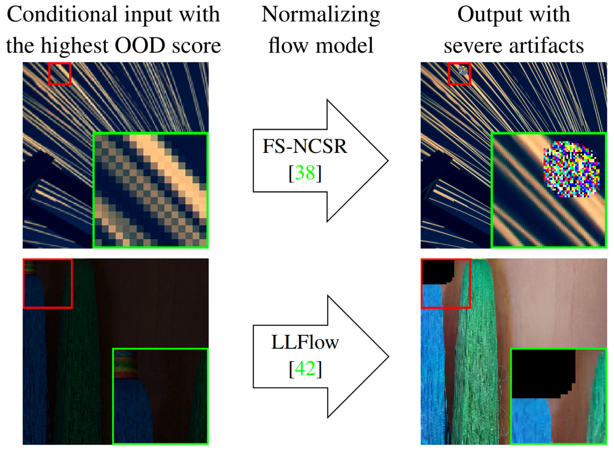
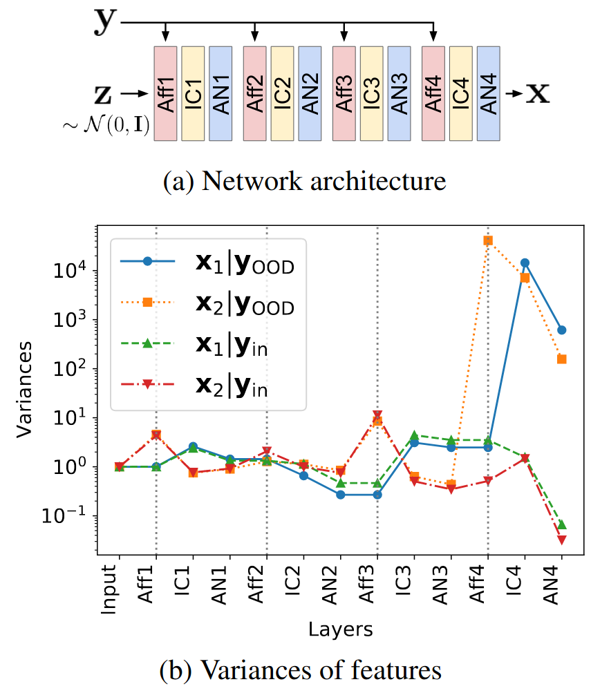
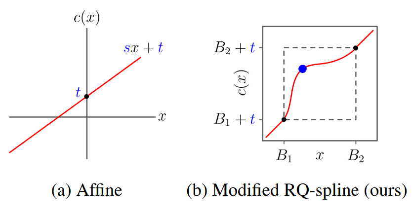
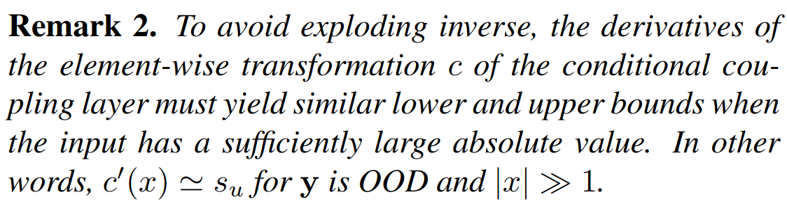
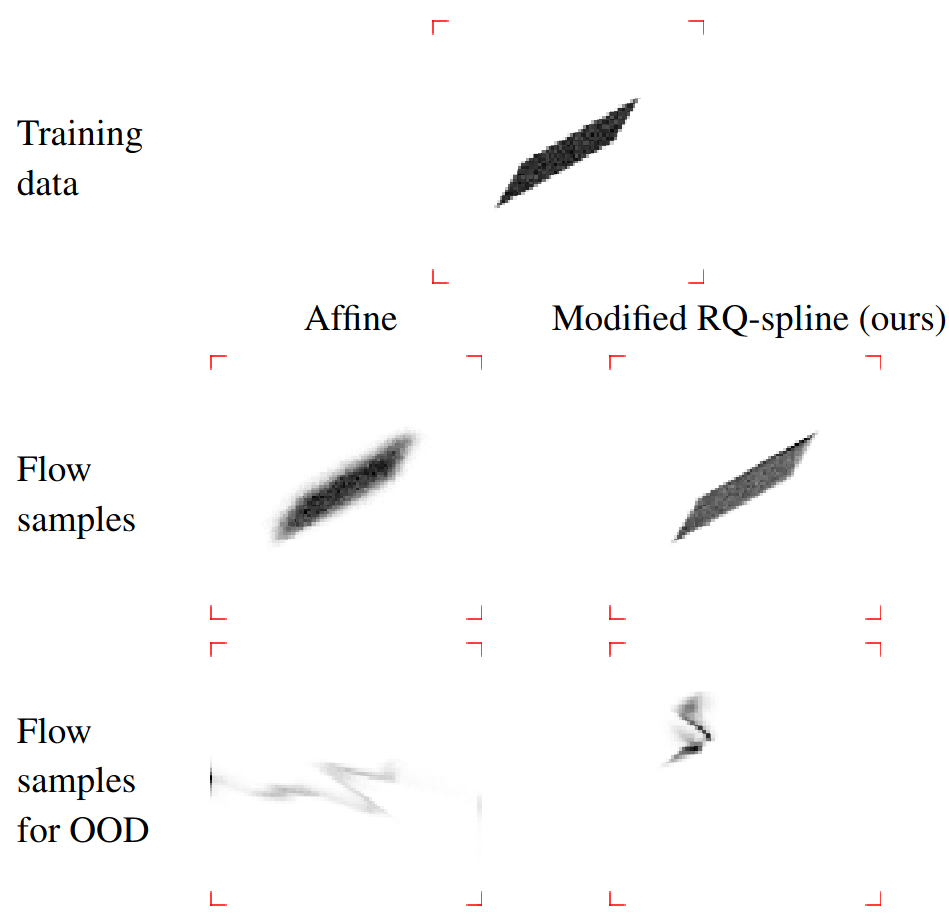
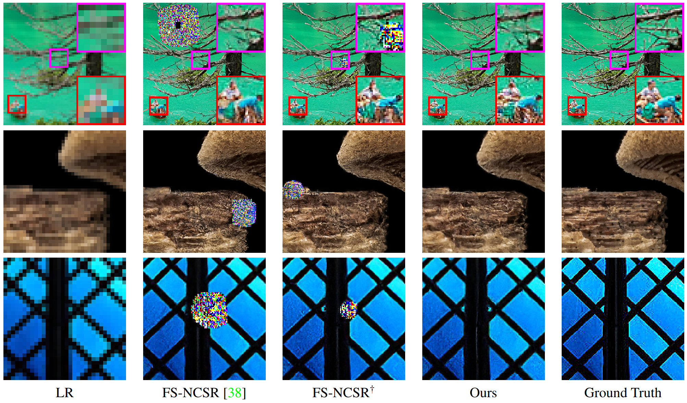
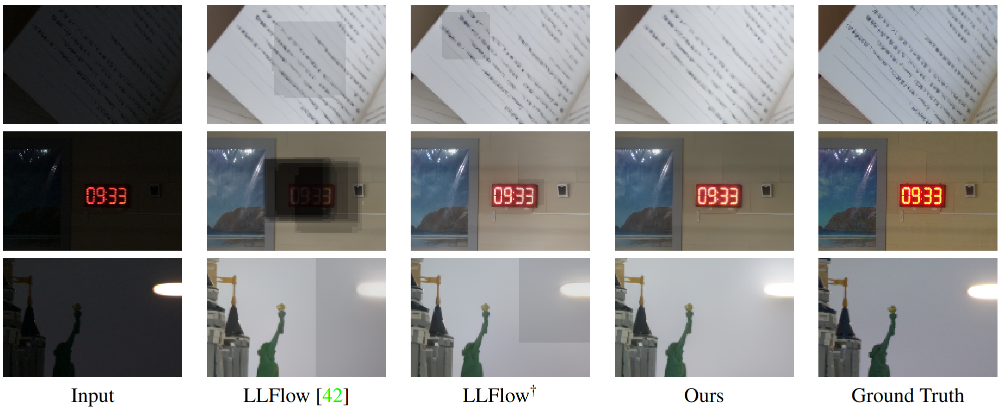

On the Robustness of Normalizing Flows for Inverse Problems in Imaging
Seongmin Hong1, Inbum Park1 , Se Young Chun1,2
2INMC, Interdisciplinary Program in AI
Seoul National University, Republic of Korea
[arXiv] [github] [bibTeX]

Unintended severe artifacts occur in conditional normalizing flows for inverse problems in imaging, which hinder their effectiveness.

We found that these artifacts are caused by out-of-distribution (OOD) conditional inputs inducing “exploding inverses” in the conditional affine coupling layer.

With our proposed remedy, we address this critical issue by substituting the affine coupling layers with modified rational quadratic spline coupling layers in normalizing flows, ensuring robustness in generated image samples.

Through a comprehensive investigation, we empirically and theoretically reveal the origins of these artifacts and propose conditions to avoid them.

To validate our findings, we conducted experiments on a toy dataset,

super-resolution space generation,

and low-light image enhancement.
Abstract
Conditional normalizing flows can generate diverse image samples for solving inverse problems. Most normalizing flows for inverse problems in imaging employ the conditional affine coupling layer that can generate diverse images quickly. However, unintended severe artifacts are occasionally observed in the output of them. In this work, we address this critical issue by investigating the origins of these artifacts and proposing the conditions to avoid them. First of all, we empirically and theoretically reveal that these problems are caused by “exploding inverse” in the conditional affine coupling layer for certain out-of-distribution (OOD) conditional inputs. Then, we further validated that the probability of causing erroneous artifacts in pixels is highly correlated with a Mahalanobis distance-based OOD score for inverse problems in imaging. Lastly, based on our investigations, we propose a remark to avoid exploding inverse and then based on it, we suggest a simple remedy that substitutes the affine coupling layers with the modified rational quadratic spline coupling layers in normalizing flows, to encourage the robustness of generated image samples. Our experimental results demonstrated that our suggested methods effectively suppressed critical artifacts occurring in normalizing flows for super-resolution space generation and low-light image enhancement.